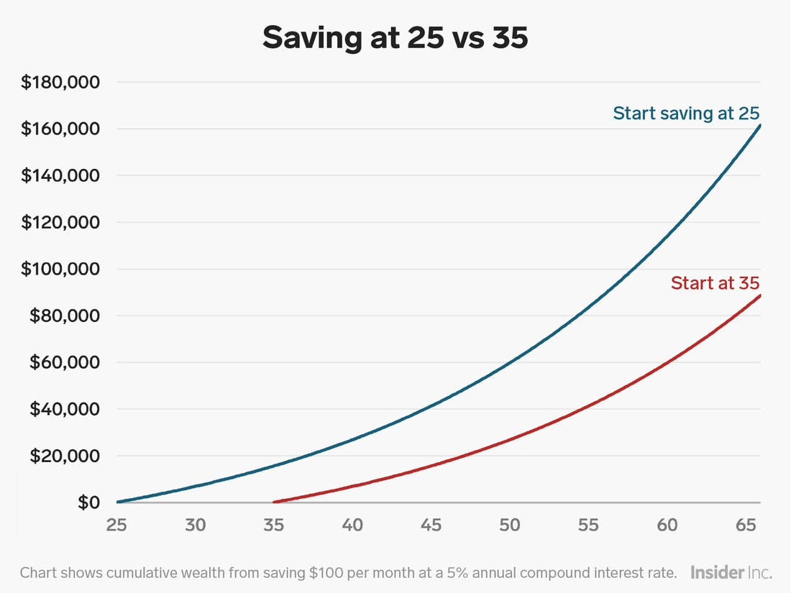
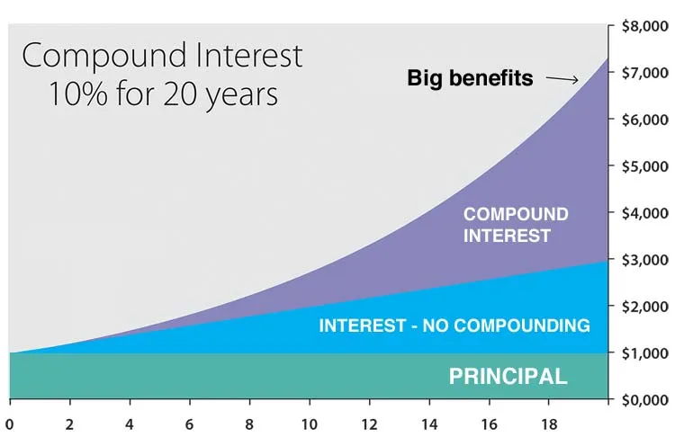

Stock markets are located all around the work with notable US markets such as the NASDAQ and NYSE, and Canadian markets like the TSX. Buying a stock in a company is equivalent to buying ownership in a company. Majority of stock markets are open Monday to Friday and are only open for a set number of hours every day. Stock markets are places where you can buy and sell stocks, and it is reccomended you trade in your local stock markets and in the currency of your country, so you don't have to pay foreign exchange fees!
Key Terms:
TFSA – Tax-free savings account where investments can earn money tax free
Dividend – payment to stockholder from a corporation’s profits
Open – the price of the stock when the market opens
Close – the price of the stock when the market closes
Dividend Yield – ((annual dividends per share) / (current share price)) x100%, percent of the annual dividend per share in comparison to the current share price
P/E Ratio – (share price) / (earnings per share), used as an indicator to determine if a company is overvalued
Blue Chip – corporation with a reputation to operate profitable in good and bad times
ETF – allows you to buy baskets of companies and assets
S&P 500 – market index that measures the stock performance of the 500 largest companies on stock exchanges in the United States
Open a TFSA:
Majority of new investors should consider themselves long term investors and expect to hold stocks for longer than one year. When you turn 18 you should open up a TFSA at a financial institution such as RBC, Scotia Bank or Sun Life Financial. A TFSA is a tax-free savings account that allows you to earn money on investments and not pay any tax on them, even when withdrawn. A TFSA has a maximum contribution which changes every year, in 2020 the maximum contribution limit is $6000. However, these values carry over every year once you turn 18, so if you never contributed to your TFSA and you are 20, you can contribute a maximum of the sum of the contribution limits in 2018, 2019 and 2020.

Beginning to invest earlier in life will allow you to retire more wealthy!
Portfolio Options:
After your TFSA is open you can choose either a self-directed investing option or a non-self-directed option. Non-self-directed options allow others to invest your money for you, but generally charging an annual fee to do so. Self-directed options allow you to control what and when you buy and sell on the stock market. As a beginner investor, you should primarily invest in ETFs and index funds which is are a basket of different companies in similar industries that you can buy to reduce your risk if one company fails, these are generally considered the most safe investments. Additionally, you can invest in a medium size portion into individual blue-chip stocks that are generally safe and likely pay a good dividend yield such as: bank stocks, utility stocks and railway stocks. These are more risky as they do you are buying the individual companies unlike a basket of companies as in an ETF. As well, if you like risk, a small portion of your portfolio can be growth-oriented stocks which are high risk, high reward. These are stocks you believe are undervalued and will go up in price soon. A portfolio composition of 80% blue chip and 20% growth stocks is considered a healthy balance for a new investor.
Recap of Blue Chip Stocks
More Safe than growth stocks
Generally have a good dividend yield
Average profit outlook
Recap of Growth Stocks
More risky than blue chip stocks and ETFs
Highest profit potential
Generally no or very small dividend yield
Recap of ETFs (Exchange-Traded Fund)
Typically very safe investment as they basket industries and companies together
Generally have a good dividend yield
Slightly less than average profit outlook
Long Term Investor:
As a new investor you should consider yourself a long-term investor, if a stock has a bad day don't immediatley panic sell. There is a general upward trend in the S&P 500 index, as in the past decade has given an annual return of 13.6%, so one bad day doesn't really matter. Compound interest is another key idea, as when you leave your money in an investment for a long time and it payd dividents, you can reinvest those dividends to even more morey and dividends. So, the longer you hold a stock for, the more compound interest you can earn!

The longer you hold your investments, the more impact compound interest makes!
Try out our Educational Stock Game for More Information!